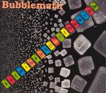

| Artist: | Bubblemath |
| Title: | Such Fine Particles Of The Universe |
| Label: | Independent |
| Length(s): | 46 minutes |
| Year(s) of release: | 2002 |
| Month of review: | [12/2002] |
| 1) | Miscreant Citizen | 4.17 |
| 2) | Be Together | 5.37 |
| 3) | Dancing With Your Pants Down | 2.55 |
| 4) | She's No Vegetarian | 2.46 |
| 5) | Doll Hammer | 4.36 |
| 6) | TV Paid Off | 3.06 |
| 7) | Help Yourself To A Neighbor | 3.26 |
| 8) | Forever Endeavor | 1.21 |
| 9) | Heavenly Scared So | 3.36 |
| 10) | Your Disease Is Nicer | 2.54 |
| 11) | Potential People | 6.27 |
| 12) | Cells Out | 4.45 |
Be Together takes the speed off things, starting out more flowingly, until the intermezzo brings more complexity. Once again very good.
Dancing With Your Pants Down doesn't sound as tongue in cheek as its title might suggest: this is yet another complex track.
She's No Vegetarian is as tongue in cheek as the title might suggest: with a bass that would do fine for a Stray Cats song and vocals that would befit Elvis this is a bit of an oddball song. On the other hand: it's by no means rock 'n' roll in an Elvis sense.
Doll Hammer is thrust forward by clear piano and pushing guitars, turning out to be not as nice as the start would make one think. And as it goes on the doll seems to end up completely smashed, with musical box accompanying its demise.
TV Paid Off has everything and everyone fall across each other. The resulting mayhem, however, does still seem to have enough structure to call this a song. Help Yourself To A Neighbor blends in nicely with its predecessor, although there is a slight Cardiacs flavour to it as well.
Forever Endeavor sounds like a hard edged up tempo version of Gentle Giant.
Heavenly Scared So and Your Disease Is Nicer are a little less odd, and or somewhat more melodic, less hectic. They are rather unserious, though.
Potential People tells the story of Jack, or even more of his semen patheticly dying on the bathroom floor. The story starts mounting with little Jack's lust, until he lies broken on the floor, by the hands of catholic activists, who caught him red handed at wasting all those Potential People. Poor little Jack. But what a nice story, and with it song, have his activities given us.
The album goes out with the bang made by Cells Out